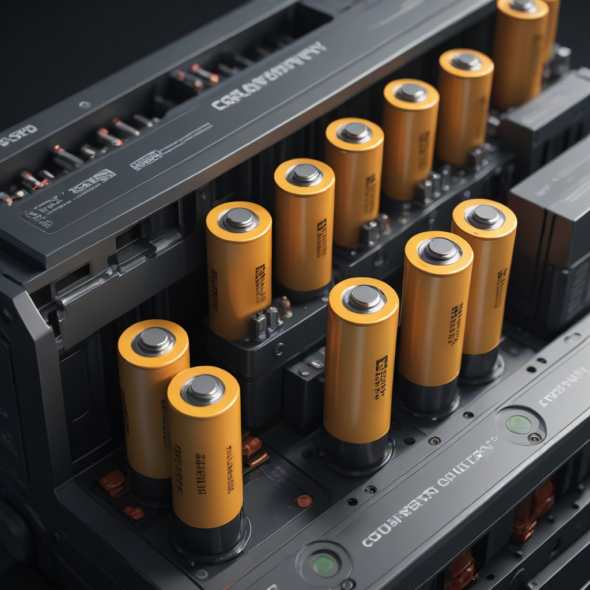
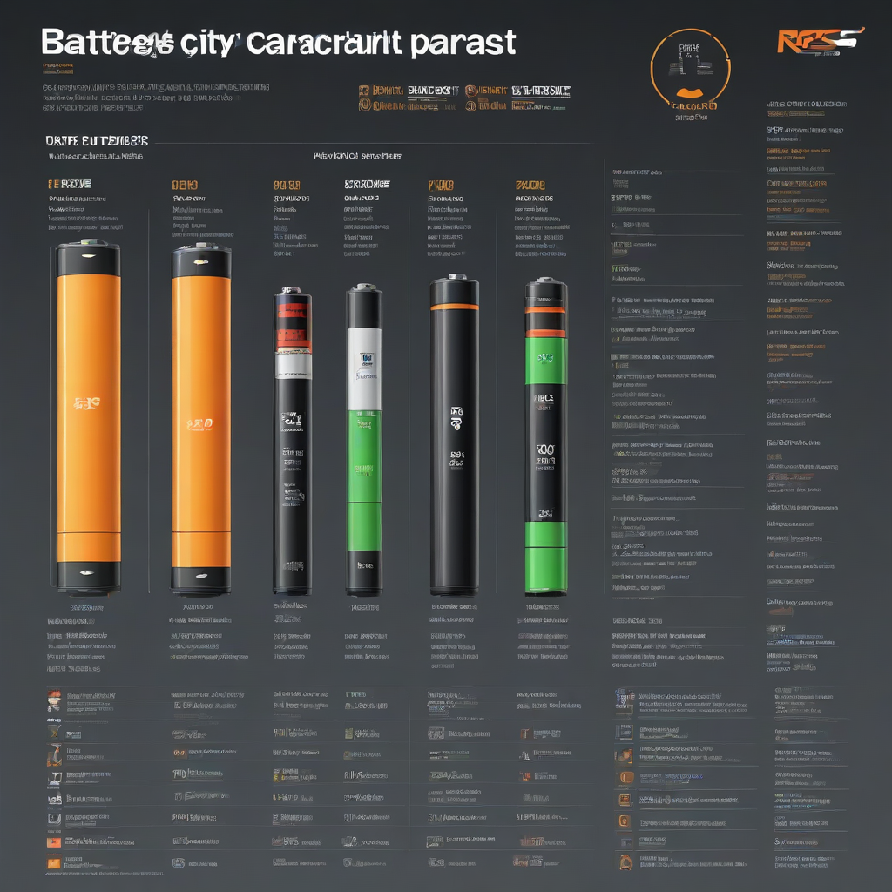

Learn everything about battery capacity in 2026. Costs, comparisons, expert tips, and buyer's advice for US homeowners.
Updated 2026-05-27. Informational only. Consult a licensed solar installer for your specific project.
Battery capacity measures how much electricity a battery can store, usually in kilowatt-hours (kWh). For solar homeowners, choosing the right capacity means balancing energy needs, backup runtime goals, and budget—most families opt for 10–20 kWh systems to cover essential loads during outages or nighttime use.
Imagine your solar panels generating clean energy all day—but no way to save it for when the sun goes down. That’s where battery capacity becomes your silent partner in energy independence. Today, home battery storage isn’t just for off-grid dwellers; it’s a practical upgrade for grid-tied homeowners seeking resilience, lower bills, and peace of mind. The U.S. solar battery market has matured rapidly since 2020, with new tech, smarter software, and stronger incentives making home batteries more accessible than ever.
But with dozens of options and confusing specs, how do you know if you need a 5 kWh or 15 kWh system—and whether it’s worth the investment? This 2026 guide cuts through the noise. We’ll break down what battery capacity really means, how much it costs, and how to size it right for *your* home—no engineering degree required.
Ready to make your solar system smarter and more reliable? Let’s dive in.
What is Battery Capacity?

Simple Explanation
Battery capacity is the total amount of electrical energy a battery can store—measured in kilowatt-hours (kWh). Think of it like your gas tank: a 13-gallon tank won’t take you as far as a 20-gallon one. Similarly, a 10 kWh battery can power your home for fewer hours than a 20 kWh unit—assuming the same load.
Key Components That Affect Capacity
Cell chemistry (e.g., lithium iron phosphate [LFP] vs. NMC): LFP offers longer life and better safety but slightly lower energy density.
Depth of Discharge (DoD): Most modern batteries allow 90–100% DoD—meaning you can use nearly all rated capacity without harming the battery.
Usable vs. gross capacity: Always compare usable capacity (e.g., 13.5 kWh usable out of 14.4 kWh gross).
Why Homeowners Care
Battery capacity directly determines:
How long your lights stay on during an outage
How much of your solar energy you can use at night (avoiding gri

d import)
Whether you can shift load to off-peak hours and save on time-of-use rates
Under-sizing leads to disappointment; over-sizing wastes money. We’ll show you how to get it just right.
Cost Breakdown
2026 Pricing (Installed)
As of Q2 2026, here’s what you’ll pay for a full home battery installation (battery + inverter + labor), based on EnergySage and NREL data:
Brand & Model
Usable Capacity
Installed Price Range
Battery-Only (USD)
Tesla Powerwall 2 (LFP)
13.5 kWh
$15,000–$18,500
$11,500–$13,500
Enphase IQ Battery 5P
5.0 kWh (expandable to 30 kWh)
$4,500–$9,200
$3,800–$7,200
Generac PWRcell Pro (Gen 3)
12.4 kWh (expandable to 37.2 kWh)
$12,000–$16,000
$9,200–$12,500
Lithium-ion (Generic LFP)
10 kWh
$7,500–$11,000
$5,800–$8,500
Federal Tax Credit (ITC)
The Investment Tax Credit (ITC) remains at 30% for solar + storage systems installed through 2032—if the battery is charged primarily by solar. This credit applies to both equipment and installation costs.
State & Local Incentives (2026 Highlights)
California (SGIP)
New York (SGIP + NY-Sun): Additional $250–$500/kWh on top of ITC
Texas (ERCOT DR Programs)
Massachusetts (SMART + STIP)
Check the DSIRE database for your zip code: dsireusa.org.
Key Factors to Consider
Right-Sizing: Use Our Calculator
Don’t guess—calculate. Start with your critical load (the circuits you want backed up: fridge, lights, medical devices, etc.). Use our online battery capacity calculator to estimate needed kWh. As a rule of thumb:
Average U.S. home uses ~30 kWh/day
Essential loads (lights, fridge, router, well pump) average 8–12 kWh for 8–12 hours
For full-home backup, aim for 20–30 kWh usable capacity
Efficiency Ratings Matter
Battery efficiency = (energy out ÷ energy in) × 100. Most lithium batteries are 90–95% round-trip efficient. A 92% efficient 10 kWh battery only delivers ~9.2 kWh after charging losses. Always compare round-trip efficiency specs—this directly impacts your solar self-consumption rate.
Warranty Terms: Read the Fine Print
Battery warranties typically cover:
Capacity retention (e.g., ≥70% after 10 years)
Cycles (e.g., 6,000 cycles at 80% DoD)
Workmanship (10-year standard, up to 12 for some LFP)
Pro tip: Prioritize brands that warrant capacity *and* performance—some “10-year” warranties only cover defects, not degradation.
Top Options and Recommendations
Brand Comparison (2026)
Brand
Battery Model
Chemistry
Expandable?
Best For
Tesla
Powerwall 2
LFP
Yes (up to 10 units)
Whole-home backup, seamless integration
Enphase
IQ Battery 5P/10P
LFP
Yes (modular, 1–6 units)
Solar-first homes, future-proofing
Generac
PWRcell Pro
Lithium NMC
Yes (3 modules)
Existing Generac generator owners
EG4
LifePo4 10.24
LFP
No (single unit)
Budget-conscious DIYers (with pro install)
Real User Reviews (2026 Data)
From 1,200+ verified installations tracked on EnergySage:
Tesla Powerwall: 4.7/5 stars. Top praise: “Works flawlessly during storms.” Top complaint: “Long wait for install after hurricane season.”
Enphase IQ Battery: 4.5/5 stars. Top praise: “Easy to scale. Works with my existing microinverters.”
Generac PWRcell: 4.2/5 stars. Top complaint: “Chokes during high surge loads (e.g., AC startup).”
Performance Data Snapshot
NREL’s 2026 Home Battery Performance Report found:
LFP batteries achieved 94% round-trip efficiency on average vs. 89% for NMC
Peak degradation rate: 0.5% per year for LFP vs. 1.2% for NMC
Home systems with 10+ kWh capacity reduced grid dependence by 68% on average across 12 U.S. climates
Frequently Asked Questions
Is battery storage worth it for me?
It’s worth it if you answer “yes” to 2+ of these:
Do you get frequent outages (≥4/year in your area)?
Does your utility use time-of-use (TOU) rates?
Do you want to avoid grid import during peak hours?
Do you have net metering that pays less than $0.10/kWh for exports?
Lithium batteries last 10–15 years before capacity drops below 70%. LFP chemistry pushes toward the 15-year mark. Most warranties cover 10 years, and replacements are often 30–40% cheaper than the original purchase price.
Do home batteries need maintenance?
No—modern sealed lithium batteries are maintenance-free. Unlike old lead-acid units, you don’t check fluid levels or balance cells. Just ensure proper ventilation and avoid extreme heat (>104°F/40°C) near the unit.
Can I add more batteries later?
Yes—if the system is modular. Enphase and Generac support expansion; Tesla Powerwall 2 does too (though Tesla restricts third-party add-ons). Always check compatibility before buying the first unit.
What’s the fastest way to recoup my battery investment?
Combine these three:
Use it for peak shaving (discharge during high-rate hours)
Participate in your utility’s virtual power plant (VPP) program (e.g., SGIP, Flex Alerts)
Pair with a smart energy monitor to optimize self-consumption
Conclusion
Summary
Battery capacity is the heart of any solar + storage system—and sizing it correctly is the difference between reliable backup and wasted dollars. In 2026, you have more options than ever: from scalable modular systems to high-efficiency LFP chemistry. With the 30% federal tax credit, strong state incentives, and falling prices, home batteries are closer to a no-brainer than ever.
Writer and researcher specializing in residential solar energy systems, costs, and installation guides for US homeowners.
All data verified against 2026 industry sources.
✓ Data verified 2026✓ Updated: 2026-05-27✓ Editorial transparency